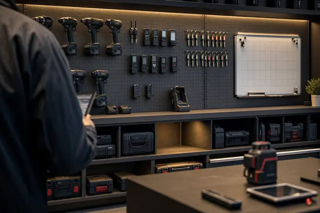
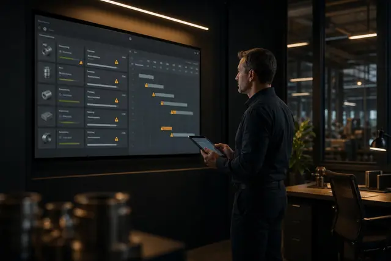

Category
ヒヤリハット・不良品・点検・納期・外注先・仕様変更など、現場の記録を一覧にして改善につなげる方法
2026.09.22
Claude Codeで届け出・出勤簿・給与の控え・カレンダーに散らばった有給休暇の記録を従業員ごと年度ごとにそろえ、付与・取得・残日数を並べて年度末までの取得見込みを出し、取り残しと偏りを人の問題と仕組みの問題に分け、届け出の置き場を決めて月に一度確かめる運用まで5ステップで解説します。
2026.09.18
Claude Codeで日報・作業記録・カレンダー・メモに散らばった「どの案件に何時間かけたか」を案件ごとにそろえ、見積もりの時間読みと実際の時間、受注金額と一時間あたりの受取額を横に置き、仕事の型ごとに読みが外れている案件を見つけ、月に一度見積もりの目安を直す運用まで5ステップで解説します。

2026.09.16
Claude Codeで持ち出し簿・ホワイトボードの写真・運行記録・購入履歴に散らばった貸出の記録を物ごとにそろえ、管理番号をつけ、今どこにあるかを出し、一年の持ち出し回数と重なりを数えて足りない物と余っている物を分け、月に一度確かめる運用まで5ステップで解説します。
2026.09.13
Claude Codeで日報・仕込み表・棚卸表に散らばった廃棄・ロスの記録を一覧にそろえ、期限切れ・作りすぎ・作り損じ・保管傷み・仕様変更・理由不明の六つに型分けして仕入れ値に換算し、品目別・曜日別・場所別の集計で繰り返し廃棄に印をつけ、品目ごとの基準を決めて月に一度確かめる運用まで5ステップで解説します。
2026.09.11
Claude Codeで従業員の資格・免許・講習の記録を一覧にそろえ、更新型・定期講習型・年数失効型・期限なし型の四つに型分けして期限日を計算し、作業ごとの必要人数と照らして切れると仕事が止まる資格に印をつけ、月に一度三か月以内の期限を確かめる運用まで5ステップで解説します。
2026.09.10
案件ごとに閉じて記憶頼みになる外注先の実績を一覧にそろえ、外注先名の表記ゆれと仕事の種類を整理し、納期・金額・手直しの三つを数えて同じ種類の仕事で外注先を比べる。新しい依頼を一言で足す運用まで5ステップで解説します。
2026.09.09
対応と同時に消えてしまう返品・不良品の記録を一覧にそろえ、原因の言葉を十個以内に統一し、一件ごとの推定損失額と原因別・相手先別の集計で同じ失敗の繰り返しを見える化する。新しい不良を一言で足す運用まで5ステップで解説します。

2026.09.08
担当者ごとに散らばった受注案件の状況を一覧に集め、「誰の何を待っているか」と待ち日数を機械に数えさせ、三つの遅れ基準で印をつけて毎朝五分で確認する。納期遅れを当日ではなく数日前に見つける手順を5ステップで解説します。
2026.09.06
脚立のぐらつき・死角・熱い鍋のすれ違い——現場の「あと一歩」の気づきを四点だけの報告で集め、場所・作業・時間帯で数えて繰り返しを見つけ、対策一覧として残し現場に返すまでを5ステップで解説します。
2026.09.05
打ち合わせや文面の途中で出た仕様変更を一覧に集め、当初の約束と照らして追加・削除・置き換え・明確化に仕分け、追加費用の根拠として相手に示せる形に整えるまでを5ステップで解説します。
2026.09.03
9月は防災月間——地震・仕入先被災・社長の入院に備え、社内に散らばる情報から緊急連絡網・守るべき業務一覧・代替手段の候補を半日で組み立てる。BCPの下地づくりを5ステップで解説します。
2026.09.01
設備トラブルはいちばん困る日にやってくる——散らばった設備・備品の情報を十項目の点検一覧にまとめ、次回の点検時期を先回りで見える化。修理と買い替えの判断材料づくりを5ステップで解説します。
2026.08.15
紙の請求書・PDF・手書きメモを読み取り、台帳に流し込む手順を解説。データ化の3段階、書類別の着手順、読み取り間違いを前提にした確認の型、現場でつまずく5つの落とし穴を整理します。
2026.04.16
NDA・業務委託・下請法チェックのプロンプト例とLegalOn Cloud・Claude活用事例。顧問弁護士費用を圧縮しつつ契約業務を90%削減する実践ガイド。
2026.04.14
ベテラン社員の退職で業務知識が消失…AIで社内ナレッジを自動整理・共有し属人化を根本解消する方法を解説。
2026.04.13
AIを活用すれば見栄えの良いプレゼン資料を数分で作成できます。ツール選びから完全自動化まで実践方法を解説。
データは溜まっているのに活用できていない方へ。AIを使えば専門知識がなくても経営に役立つダッシュボードを自動で作成できます。
2026.04.12
AIによる需要予測と自動発注で、欠品率を半減・過剰在庫を3割削減する実践ガイド。小売・EC・飲食・製造の業種別コツを解説。
2026.04.04
求人原稿の作成からスカウトメール、面接質問設計まで。中小企業がすぐに実践できるAI×採用の効率化テクニック5選を解説。
2026.04.02
AIの音声認識と要約機能を活用して議事録作成��自動化。おすすめツール比較、導入ステップまで徹底解説。